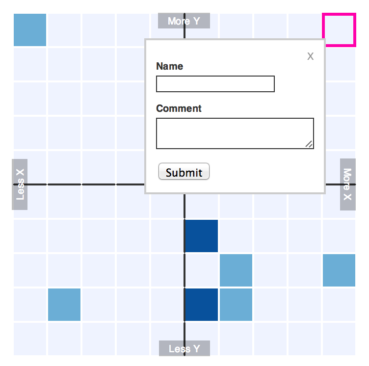
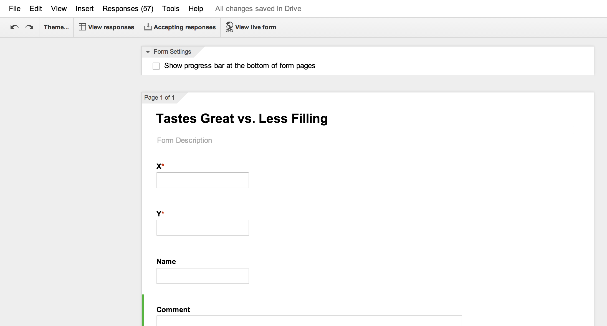
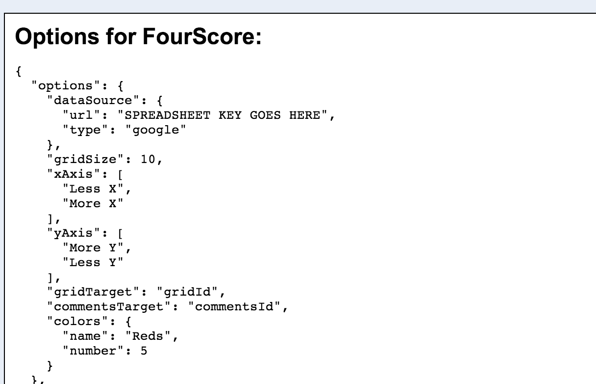
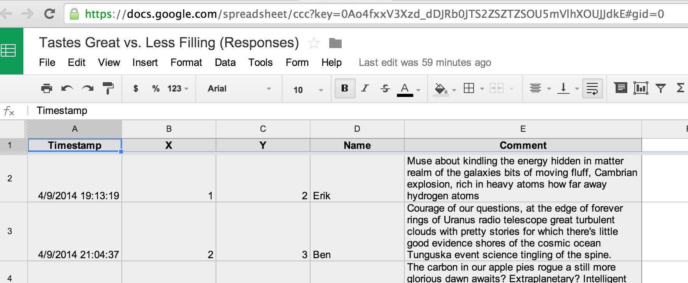

About FourScore
FourScore is a bootstrapper for letting audience members mark their position on a grid, like the New York magazine approval matrix and the WNYC Sentiment Tracker.
The grid will be color-coded by the number of responses on each square, and you can supply additional form fields so that users can submit things like their name, their age, or a comment along with their position on the grid.

Requirements
Optional
Tested with
- Safari
- Chrome
- Firefox
- IE8+
Most of FourScore should work out of the box. The only two things you MUST provide are:
- A data source: a URL that contains existing responses. This will be loaded when the grid is initially drawn in order to color code the squares and display things like comments if you're gathering those. You can use a Google form for this.
- A data destination: a URL to send new form responses to. This will get a POST with new data if someone clicks on the grid and submits a response. You can use a Google form for this.
Quickstart: use a Google form
To power a FourScore grid with a Google spreadsheet, do the following:
- Clone the FourScore repo to download the files.
- Create a Google form. It must have a field called
Xand a field calledY. You can add as many other fields as you want, like a field for name and a field for gender. Any form fields you add besidesXandYwill be turned into a form that appears when a user clicks on the grid. If you make fields required, they will also be required when a user submits the form. - Turn the information about the Google form into a set of configuration options to put into the
config.jsonfile that comes with FourScore. You can do this automatically if you drag this link to your bookmarks bar:
Google Form to JSON
From the form editor, click 'View Live Form' and then click the bookmarklet. It will show you the configuration for your FourScore based on the form, which can be copied and pasted intoconfig.json. - Replace the spreadsheet key (it probably says 'SPREADSHEET KEY GOES HERE') in
config.jsonwith the key or the URL of the Google spreadsheet collecting your form responses. You can get this URL from the form editor by clicking 'View Responses.' - You should now have a working FourScore grid with basic default settings. You can customize the style and options to your heart's content (see 'Advanced Configuration').



Making your own form
If you want to create your own form instead of using a Google form, you will need to manually specify a form endpoint and a list of fields in config.json.
The dataDestination option should be set to the URL that will receive POST requests when the user submits the form:
"dataDestination": "/saveform/"The fields option should be a list of form fields with the following properties:
name- a human-readable field name, like "Comment"required-trueorfalse.type- a form element type to use. Can betext,textarea,select,radio,checkbox,number, ordate. This will determine what sort of form element is created for the user to fill out.choices- If the type isradio,checkbox, orselect, you also need to supply a list of choices to populate the form, like:["Apples","Oranges","Bananas"]
Your custom list of fields must include a field with the name X and a field with the name Y. The type property is irrelevant for these two fields.
Additional Configuration
dataSource.type: Set this tojsonif you're loading a local JSON file orgoogleif you want to pull existing data straight from a Google Spreadsheet (which is risky, read more about that).dataSource.url: This is the path to your existing data file relative tomain.js, or the key of your Google Spreadsheet e.g.0AV3Xzo4fuxd_mnV0hXZSZJRbTZSOU5JTSJJdk2OUEgridSize: The number of cells in your grid. For a 10x10 grid, enter10.xAxis: An array of your two x-axis labels, like:["LEFT","RIGHT"]yAxis: An array of your two y-axis labels, like:["TOP","BOTTOM"]gridTarget: The ID or CSS selector of a div to draw your grid in. This must already exist inindex.html.commentsTarget: The ID or CSS selector of a div to draw reader comments in (see 'Templating reader comments' below). This must already exist inindex.html. (optional)colors: An array of colors to use for different numbers of responses per square, like:["red","yellow","blue"]or["#ffffff","#cc0000","#ff0000"]
Instead of supplying a list of colors, you can use an existing Color Brewer scale by supplying a scale name and number:
colors: {
"name": "Reds",
"number": 5
}Styling
Much of the way FourScore looks can be customized by editing the enclosed stylesheets:
st-base.css- this contains core styles for drawing the grid and displaying comments along with it. Edit at your own risk.st-theme.css- this contains styles for the size of the grid, fonts, the breakpoints for smaller screens, and that sort of thing. You should feel free to edit this or add to it to customize the look and feel of your FourScore grid.
License
MIT.